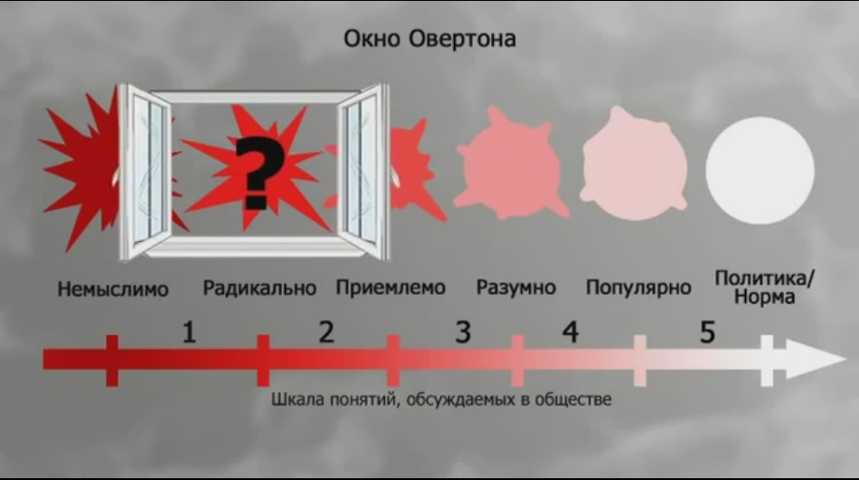

Окна Овертона и Кара-Мергена
Окно Овертона
http://zuhel.livejournal.com/465630.html
Слышали ли вы когда-нибудь об "Окне Овертона"?
Если нет, то рекомендую к прочтению эту ТЕХНОЛОГИЮ ЛЕГАЛИЗАЦИИ ЧЕГО УГОДНО. Вам станет понятно, как легализуют гомосексуализм и однополые браки. Станет совершенно очевидно, что работа по легализации педофилии и инцеста будет завершена в Европе уже в ближайшие годы. Как и детская эвтаназия, кстати.
Джозеф Овертон описал, как совершенно чуждые обществу идеи были подняты из помойного бака общественного презрения, отмыты и, в конце концов, законодательно закреплены.
Согласно Окну возможностей Овертона, для каждой идеи или проблемы в обществе существует т.н. окно возможностей. В пределах этого окна идею могут или не могут широко обсуждать, открыто поддерживать, пропагандировать, пытаться закрепить законодательно. Окно двигают, меняя тем самым веер возможностей, от стадии «немыслимое», то есть совершенно чуждое общественной морали, полностью отвергаемое до стадии «актуальная политика», то есть уже широко обсуждённое, принятое массовым сознанием и закреплённое в законах.
Это не промывание мозгов как таковое, а технологии более тонкие. Эффективными их делает последовательное, системное применение и незаметность для общества-жертвы самого факта воздействия.
Ниже я на примере разберу, как шаг за шагом общество начинает сперва обсуждать нечто неприемлемое, затем считать это уместным, а в конце концов смиряется с новым законом, закрепляющим и защищающим некогда немыслимое.
Возьмём для примера что-то совершенно невообразимое. Допустим, каннибализм, то есть идею легализовать право граждан на поедание друг друга. Достаточно жёсткий пример?
ННо всем очевидно, что прямо сейчас (2014 г.) нет возможности развернуть пропаганду каннибализма — общество встанет на дыбы. Такая ситуация означает, что проблема легализации каннибализма находится в нулевой стадии окна возможностей. Эта стадия, согласно теории Овертона, называется «Немыслимое». Смоделируем теперь, как это немысливое будет реализовано, пройдя все стадии окна возможностей.
ТЕХНОЛОГИЯ. Ещё раз повторю, Овертон описал ТЕХНОЛОГИЮ, которая позволяет легализовать абсолютно любую идею.
Обратите внимание! Он не концепцию предложил, не мысли свои сформулировал некоторым образом — он описал работающую технологию. То есть такую последовательность действий, исполнение которой неизменно приводит к желаемому результату. В качестве оружия для уничтожения человеческих сообществ такая технология может быть эффективнее термоядерного заряда.
КАК ЭТО СМЕЛО! Тема каннибализма пока ещё отвратительна и совершенно не приемлема в обществе. Рассуждать на эту тему нежелательно ни в прессе, ни, тем более, в приличной компании. Пока это немыслимое, абсурдное, запретное явление. Соответственно, первое движение Окна Овертона — перевести тему каннибализма из области немыслимого в область радикального.
У нас ведь есть свобода слова.
Ну, так почему бы не поговорить о каннибализме?/p>
Учёным вообще положено говорить обо всём подряд — для учёных нет запретных тем, им положено всё изучать. А раз такое дело, соберём этнологический симпозиум по теме «Экзотические обряды племён Полинезии». Обсудим на нём историю предмета, введём её в научный оборот и получим факт авторитетного высказывания о каннибализме.
Видите, о людоедстве, оказывается, можно предметно поговорить и как бы остаться в пределах научной респектабельности.
ООкно Овертона уже двинулось. То есть уже обозначен пересмотр позиций. Тем самым обеспечен переход от непримиримо отрицательного отношения общества к отношению более позитивному.
Одновременно с околонаучной дискуссией непременно должно появиться какое-нибудь «Общество радикальных каннибалов». И пусть оно будет представлено лишь в интернете — радикальных каннибалов непременно заметят и процитируют во всех нужных СМИ.
Во-первых, это ещё один факт высказывания. А во-вторых, эпатирующие отморозки такого специального генезиса нужны для создания образа радикального пугала. Это будут «плохие каннибалы» в противовес другому пугалу — «фашистам, призывающим сжигать на кострах не таких, как они». Но о пугалах чуть ниже. Для начала достаточно публиковать рассказы о том, что думают про поедание человечины британские учёные и какие-нибудь радикальные отморозки иной природы.
Результат первого движения Окна Овертона: неприемлемая тема введена в оборот, табу десакрализовано, произошло разрушение однозначности проблемы — созданы «градации серого».
ПОЧЕМУ БЫ И НЕТ? Следующим шагом Окно движется дальше и переводит тему каннибализма из радикальной области в область возможного.
На этой стадии продолжаем цитировать «учёных». Ведь нельзя же отворачиваться от знания? Про каннибализм. Любой, кто откажется это обсуждать, должен быть заклеймён как ханжа и лицемер.
Осуждая ханжество, обязательно нужно придумать каннибализму элегантное название. Чтобы не смели всякие фашисты навешивать на инакомыслящих ярлыки со словом на букву «Ка».
Внимание! Создание эвфемизма — это очень важный момент. Для легализации немыслимой идеи необходимо подменить её подлинное название.
Нет больше каннибализма.
Теперь это называется, например, антропофагия. Но и этот термин совсем скоро заменят ещё раз, признав и это определение оскорбительным.
Цель выдумывания новых названий — увести суть проблемы от её обозначения, оторвать форму слова от его содержания, лишить своих идеологических противников языка. Каннибализм превращается в антропофагию, а затем в антропофилию, подобно тому, как преступник меняет фамилии и паспорта.
Параллельно с игрой в имена происходит создание опорного прецедента — исторического, мифологического, актуального или просто выдуманного, но главное — легитимированного. Он будет найден или придуман как «доказательство» того, что антропофилия может быть в принципе узаконена.
«Помните легенду о самоотверженной матери, напоившей своей кровью умирающих от жажды детей?»
«А истории античных богов, поедавших вообще всех подряд — у римлян это было в порядке вещей!»
«Ну, а у более близких нам христиан, тем более, с антропофилией всё в полном порядке! Они до сих пор ритуально пьют кровь и едят плоть своего бога. Вы же не обвиняете в чём-то христианскую церковь? Да кто вы такие, чёрт вас побери?»
Главная задача вакханалии этого этапа — хотя бы частично вывести поедание людей из-под уголовного преследования. Хоть раз, хоть в какой-то исторический момент.
ТАК И НАДО. После того как предоставлен легитимирующий прецендент, появляется возможность двигать Окно Овертона с территории возможного в область рационального.
Это третий этап. На нём завершается дробление единой проблемы.
«Желание есть людей генетически заложено, это в природе человека»
«Иногда съесть человека необходимо, существуют непреодолимые обстоятельства»
«Есть люди, желающие чтобы их съели»
«Антропофилов спровоцировали!»
«Запретный плод всегда сладок»
«Свободный человек имеет право решать что ему есть»
«Не скрывайте информацию и пусть каждый поймёт, кто он — антропофил или антропофоб»
«А есть ли в антропофилии вред? Неизбежность его не доказана».
В общественном сознании искусственно создаётся «поле боя» за проблему. На крайних флангах размещают пугала — специальным образом появившихся радикальных сторонников и радикальных противников людоедства.
Реальных противников — то есть нормальных людей, не желающих оставаться безразличными к проблеме растабиурования людоедства — стараются упаковать вместе с пугалами и записать в радикальные ненавистники. Роль этих пугал — активно создавать образ сумасшедших психопатов — агрессивные, фашиствующие ненавистники антропофилии, призывающие жечь заживо людоедов, жидов, коммунистов и негров. Присутствие в СМИ обеспечивают всем перечисленным, кроме реальных противников легализации.
При таком раскладе сами т.н. антропофилы остаются как бы посередине между пугалами, на «территории разума», откуда со всем пафосом «здравомыслия и человечности» осуждают «фашистов всех мастей».
«Учёные» и журналисты на этом этапе доказывают, что человечество на протяжении всей своей истории время от времени поедало друг друга, и это нормально. Теперь тему антропофилии можно переводить из области рационального, в категорию популярного. Окно Овертона движется дальше.
В ХОРОШЕМ СМЫСЛЕ. Для популяризации темы каннибализма необходимо поддержать её поп-контентом, сопрягая с историческими и мифологическими личностями, а по возможности и с современными медиаперсонами.
Антропофилия массово проникает в новости и токшоу. Людей едят в кино широкого проката, в текстах песен и видеоклипах.
Один из приёмов популяризации называется «Оглянитесь по сторонам!»
«Разве вы не знали, что один известный композитор — того?.. антропофил.»
«А один всем известный польский сценарист — всю жизнь был антропофилом, его даже преследовали.»
«А сколько их по психушкам сидело! Сколько миллионов выслали, лишили гражданства!.. Кстати, как вам новый клип Леди Гаги «Eat me, baby»?
На этом этапе разрабатываемую тему выводят в ТОП и она начинает автономно самовоспроизводиться в массмедиа, шоубизнесе и политике.
Другой эффективный приём: суть проблемы активно забалтывают на уровне операторов информации (журналистов, ведущих телепередач, общественников и тд), отсекая от дискуссии специалистов.
Затем, в момент, когда уже всем стало скучно и обсуждение проблемы зашло в тупик, приходит специальным образом подобранный профессионал и говорит: «Господа, на самом деле всё совсем не так. И дело не в том, а вот в этом. И делать надо то-то и то-то» — и даёт тем временем весьма определённое направление, тенденциозность которого задана движением «Окна».
Для оправдания сторонников легализации используют очеловечивание преступников через создание им положительного образа через не сопряжённые с преступлением характеристики.
«Это же творческие люди. Ну, съел жену и что?»
«Они искренне любят своих жертв. Ест, значит любит!»
«У антропофилов повышенный IQ и в остальном они придерживаются строгой морали»
«Антропофилы сами жертвы, их жизнь заставила»
«Их так воспитали» и т.д.
Такого рода выкрутасы — соль популярных ток-шоу.
«Мы расскажем вам трагическую историю любви! Он хотел её съесть! А она лишь хотела быть съеденной! Кто мы, чтобы судить их? Быть может, это — любовь? Кто вы такие, чтобы вставать у любви на пути?!»
МЫ ЗДЕСЬ ВЛАСТЬ. К пятому этапу движения Окна Овертона переходят, когда тема разогрета до возможности перевести её из категории популярного в сферу актуальной политики.
Начинается подготовка законодательной базы. Лоббистские группировки во власти консолидируются и выходят из тени. Публикуются социологические опросы, якобы подтверждающие высокий процент сторонников легализации каннибализма. Политики начинают катать пробные шары публичных высказываний на тему законодательного закрепления этой темы. В общественное сознание вводят новую догму — «запрещение поедания людей запрещено».
Это фирменное блюдо либерализма — толерантность как запрет на табу, запрет на исправление и предупреждение губительных для общества отклонений.
Во время последнего этапа движения Окна из категории «популярное» в «актуальную политику» общество уже сломлено. Самая живая его часть ещё как-то будет сопротивляться законодательному закреплению не так давно ещё немыслимых вещей. Но в целом уже общество сломлено. Оно уже согласилось со своим поражением.
Приняты законы, изменены (разрушены) нормы человеческого существования, далее отголосками эта тема неизбежна докатится до школ и детских садов, а значит следующее поколение вырастет вообще без шанса на выживание. Так было с легализацией педерастии (теперь они требуют называть себя геями). Сейчас на наших глазах Европа легализует инцест и детскую эвтаназию.

Окно Кара-Мергена
http://karamergen.livejournal.com/581337.html
Про «Окно Овертона» в последнее время не слышал только ленивый. То есть, если кому надо освежить в памяти — в поисковике всегда масса ссылок на эту тему.
Как недавно кто-то писал — этот термин вместе со смыслом является откровенным новоделом, который и в ЖЖ, и в Вики написал один и тот же человек. Но дело-то не в этом.
Дело в том, что смысл явления вполне правильный. Вот только автор вброса вполне подпадает под тэг, который в сообществе ру_антирелижн является одним из самых популярных: «Еще один ВНЕЗАПНО ВСЕ ПОНЯЛ».
Само явление переоценки ценностей достаточно старое и вполне изученное. К примеру, можно вспомнить рассказ Джека Лондона «Буйный характер Алоизия Пенкберна».
«— Подождите, Гриф, — сказал Пенкберн с хорошо разыгранной беззаботностью. — Вы говорите, что они покупают у белых людей только бусы и табак. Прекрасно. Слушайте меня. Они нашли клад, и придется его у них выменивать. Соберите в сторонке всю команду и внушите им, чтобы они притворились, будто их интересуют только пенсы. Понятно? Золотыми монетами они должны пренебрегать, а серебряные брать, но неохотно. Пусть требуют от дикарей одни только медяки.
Пенкберн стал руководить обменом. За пенс из носа Одноглазого он дал десять пачек табаку. Поскольку каждая пачка стоила Дэвиду Грифу один цент, сделка была явно убыточной. Но за серебряные полукроны Пенкберн давал только по одной пачке. От соверенов он вообще отказался. Чем решительнее он отказывался, тем упорнее Одноглазый навязывал ему их. Наконец, с притворным раздражением, как бы делая явную уступку, Пенкберн дал две пачки за ожерелье из десяти соверенов.
— Преклоняюсь перед вами! — сказал Гриф Пенкберну вечером за обедом.
— Ничего умнее не придумаешь! Вы произвели переоценку ценностей. Теперь они будут дорожить пенсами и навязывать нам соверены.»
То есть — ничего принципиально нового в области изменения отношения к тому или иному социальному объекту — нет.
Просто интересно то, что такая работа появляется именно сейчас.
Кстати, если уж говорить о значимой цельности такого рода манипуляций общественным мнением, то наиболее полно это отражено в работе Сергея Кара-Мурзы «Манипуляция сознанием», (Другой вопрос, что эту книгу читали далеко не все те, кто восхищается значимостью статьи про «Овертона»).
Хотя и Кара-Мурза, с моей скромной точки зрения, поступает несколько некорректно. То есть, он вполне уверенно критикует и развенчивает антисоветские политико-социальные мероприятия, но, стоит зайти речи о влиянии ползучего клерикализма, как его тон тут же становится осторожным и мягким.
Хотя именно на агрессии клерикализма и может быть показан наиболее ярко упомянутый эффект.
Сначала клерикализм был чем-то постыдным, античеловечным, возможным только старым старушкам и людям с травмированной психикой. Затем — он стал предметом научного изучения и массы статей нашей дорогой люмпен-интеллигенции. Потом — возникло отношение, как к чему-то нехорошему, но допустимому в принципе.
Выделю главное: «Окно Овертона» — явление, которое определяется наличием десакрализации и легитимизации явлений, которые были до определенного момента резко табуированы в обществе вплоть до полного запрета. Кроме того, такого рода табу определялось как историческими субъективными особенностями общества, так и объективными, основанными на тех или иных законах социального развития.
Но самое главное, как всегда, осталось за кадром.
А самое главное заключается в том, что любая система социальных табу всегда является системой балансной, где каждый факт табуирования определяется не только запретом на выполнение какого-то действия, но и прямым требованием выполнения его антагониста.
Более того, те поля, те зоны изменения валидности, которые высвечиваются в окне Овертона, всегда работают в группах. То есть, невозможно, например, выделить только одно окно (по тому же каннибализму), не переоценив какой-то другой области табуирования.
И начинают работать смысловые весы.
Например, чтобы легитимизировать гомосексуализм, требуется серьезная работа не только в окне Овертона, но и в окне Кара-Мергена — то есть, требуется делегитимизировать, сделать социально неприемлемым такое явление, как традиционный секс, традиционную семью.
А как это можно сделать?
Да запросто!
Например — создать в социуме миф о вторичности женщины, о ее зависимости от мужчины. Вспомним тот же библейский миф о происхождении женщины из ребра мужчины!
Или утверждение той же библии о том, что «женщина — сосуд скудельный», то есть, «хрупкий, ломкий, непрочный, второсортный».
Опять же в религиозных текстах подчеркивается «нечистота» женщины в дни критические, в дни месячных циклов.
Кстати же и определенные формы существования мужчин в социуме вполне уверенно навязывают близость именно мужчин к мужчинам и женщин к женщинам — существование, к примеру, в монастырях. Что, замечу, во многих социальных культурах позиционируется, как сугубо положительный образ. А всякое стремление к сближению разнополых существ регламентируется, как нарушающее табу во всех случаях, кроме законно прописанных.
Точно так же — феминизация начинает позиционироваться чем-то однозначно верным, позитивным. И все это на фоне того, что «весь мир ополчился на бедных женщин старается их закабалить и унизить». (Тут можно сослаться на классическую книгу Клариссы Эстес «Бегущая с волками».)
Свершено аналогичное явление происходит при насаждении в рамках «окна Овертона» философии и социальной доктрины крайнего национализма и фашизма. Что нужно сделать, чтобы на фоне этого «чего-то» фашизм уже не рассматривался, как агрессивная и человеконенавистническая идеология, насаждаемая олигархическим капиталом в форме национальной нетерпимости и национальной исключительности? Да создать негативное представление о любых проявлениях антифашистской и антиолигархической деятельности. Равно как и активизация интереса и симпатий к фашизму на том основании, что фашизм — противопоставление социализму, а социализм в лице Сталина — намного страшнее и опаснее фашизма.
Кстати, не худо бы вспомнить и еще один пример такого рода переоценки ценностей. Из великой книги Соловьева «Повесть о Ходже Насреддине»:
«Кадий в это время мысленно подбирал слова, которые бы могли наилучшим образом свидетельствовать о полной законности сделки, выражая примерное равенство вкладов с обеих сторон.
— Доходное озеро и принадлежащие к нему сад и дом, — сказал он многозначительным, каким-то вещим голосом и поднял палец. — Очень хорошо, запишем! — он подал повелительный знак писцу. — Запишем в таком порядке: дом, сад и принадлежащий к ним водоем. Ибо кто может сказать, что озеро — это не водоем? С другой стороны: если упомянутые дом и сад принадлежат к озеру или, иначе говоря, — к водоему, ясно, что и водоем в обратном порядке принадлежит к дому и саду. Пиши, как я сказал: дом, сад и принадлежащий к ним водоем!
По ловкости это был удивительный ход, сразу решивший половину дела: простой перестановкой слов озеро волшебно превратилось в какой-то захудалый водоем, находящийся в некоем саду, перед некиим домом. В общей стоимости такой усадьбы главная доля падала, конечно, на дом, затем — на сад, а водоем только упоминался — так, для порядка, ибо сам по себе даже не заслуживал отдельной оценки.
Стоимость имущества одной стороны уменьшилась во много десятков раз. Но сделка все еще заметно кренилась влево. Чтобы окончательно выровнять ее, многомудрый кадий приступил к исследованию имущества другой стороны.
И здесь воспоследовал его новый победоносный удар:
— Узакбай, сын Бабаджана, скажи, какое имя носит находящийся в твоем обладании предназначенный тобой к обмену ишак?
— Я всегда называл его Пфак-Пузырь.
— Пфак! Пузырь! — воскликнул кадий. — Какое низменное, отвратительное имя для столь драгоценного животного, в обмен на которое ты получаешь целое богатство! Не будет ли разумным дать ему другое, благородное, звучное имя: если уж не Олтын-Золото, то хотя бы Кумыш-Серебро?
— Можно и так, — согласился Ходжа Насреддин, схвативший на лету мысль кадия. — Мне все равно, а ему и подавно.
— Пиши! — обратился кадий к писцу. — Пиши: упомянутое имущество — дом, сад и принадлежащий к ним водоем со стороны Агабека, сына Муртаза, передаются Узакбаю, сыну Бабаджана, в обмен со стороны последнего на Кумыш-Серебро, весом… А скажи, Узакбай, — в упоении гордым торжеством старый кадий возвысил голос до трубного звука, — скажи, сколько он весит, твой ишак?
— Да пуда четыре весит.
— Мне нужен точный вес.
— Пусть будет четыре пуда и семь с половиной фунтов — за счет безделья и сожранных лепешек.
— Пиши! — вострубил кадий, повелевая писцу. — Обменивается на серебро, весом в четыре пуда и семь с половиной фунтов, о чем и составлена мною, кадием Абдурахманом, сыном Расуля, настоящая запись в полном соответствии с законом и ханскими повелениями!
Ходжа Насреддин смотрел на кадия с удивлением: это была работа хотя и в пройдошестве, но подлинного мастера, и нельзя было ею не восхищаться».
(В.Соловьев, «Очарованный принц»).
Фактически, любая попытка сделать черное белым основывается на процессе максимального очернения белого. Чтобы на его фоне черное казалось… не таким уж и черным.
Помните, в рассказах о Бирбале, визире падишаха Акбара, был момент, кода падишах ставит своим приближенным задачу об укорочении нарисованной черты?
Он нарисовал на песке линию и приказал сделать ее короче, не прикасаясь к ней, не стирая ее.
Бирбал просто начертил рядом еще одну, гораздо длиннее первой и сказал: «О, шахиншах! Теперь твоя линия стала короче моей!»
Вот-вот.
Чтобы тот же Гитлер стал условно «хорошим», надо его противника (к примеру Сталина) сделать максимально плохим. Чтобы гомосексуалистов, религиозных мракобесов и людоедов превратить в легитимных и уважаемых членов социума, нужно сделать их антиподов в глазах публики исчадиями ада, врагами природы, уродливыми чудовищами.
А дальше… правильно, дальше работает как раз «окно Овертона».